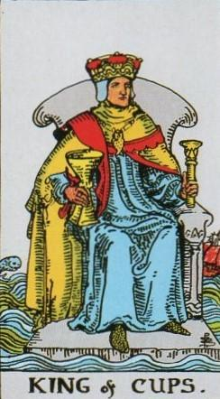
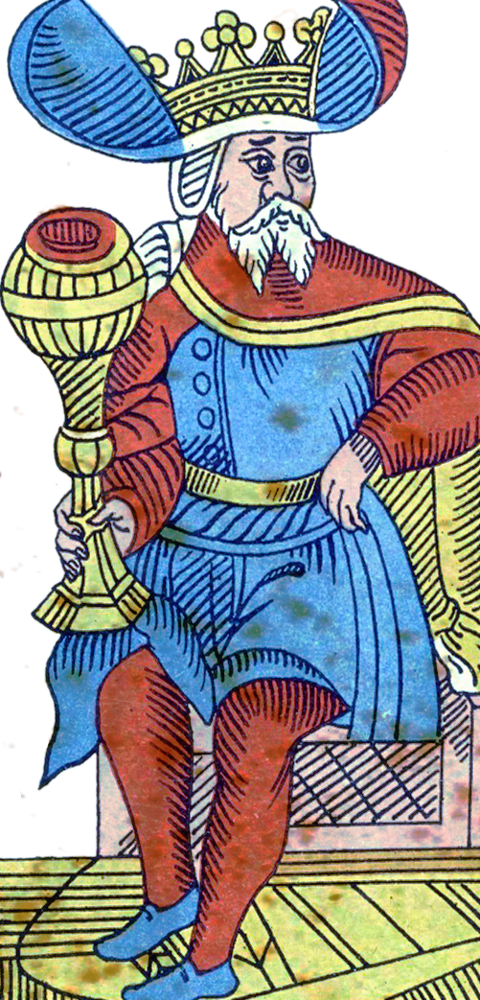
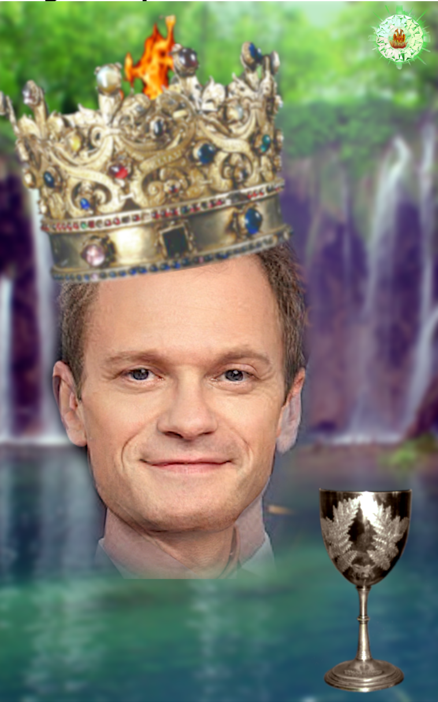
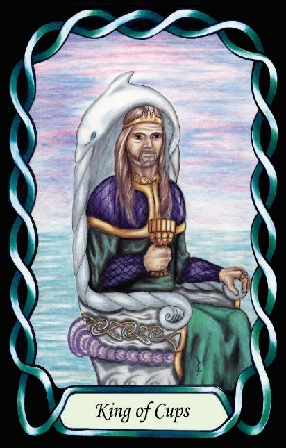

King of Cups
The Inventor / Visionary (ENTP – NeTi)




King |
Rational: Abstract Utilitarian |
||
Emotions |
|||
Extroverted iNtuition Introverted Thinking |
|||
3.2% of population |
|||
Example: Neil Patrick Harris, David Hyde Pierce |
|||
Meaning of Life: Innovation |
|||
Astrology: Pisces (Male side) |
|||
Kings of Cups are expressive, inventive Rationals who approach the world through possibilities. Their extroverted intuition drives them to explore new ideas, new angles, and new ways of solving human problems. They are natural innovators, constantly scanning the horizon for what could be improved, redesigned, or reimagined.
As Rationals in a Water suit, they apply their abstract thinking to the human domain. They are philosophers of society — not in a detached, academic sense, but in a creative, reformist way. They see the flaws, contradictions, and inefficiencies in how people live and interact, and they instinctively begin generating alternatives. Their focus is on improving the human condition through ideas, inventions, and conceptual breakthroughs.
Their introverted thinking gives them a sharp internal logic that evaluates these possibilities, refining them into coherent models or workable solutions. They innovate not by following established paths, but by questioning assumptions and rethinking fundamentals. Their curiosity is boundless, and they often pursue ideas simply because they are interesting, elegant, or intellectually stimulating.
Kings of Cups influence others through enthusiasm and imagination. They communicate in a lively, engaging way, drawing people into their vision of what could be. Their leadership is not hierarchical but inspirational — they spark movements, challenge norms, and encourage others to think differently. They are at their best when exploring new conceptual territory or championing a cause that aligns with their ideals.
At their core, they are driven by innovation. Their meaning in life is found in discovering new possibilities, generating original ideas, and offering creative solutions to the problems of human existence. They are the inventors and visionaries of the Rationals — fluid, imaginative, and always pushing the boundaries of what is possible.